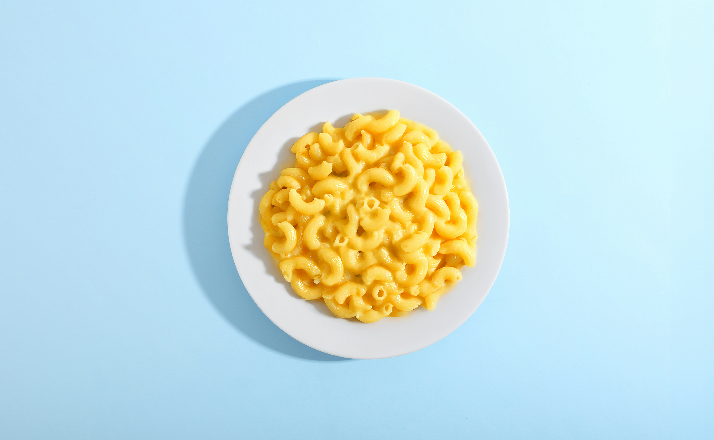

Simple Macaroni and Cheese

Description
This is a quick and creamy homemade macaroni and cheese made with
elbow macaroni and a simple Cheddar cheese sauce. It uses basic
pantry ingredients and comes together on the stovetop in about 25
minutes, making it an easy comfort-food meal or side dish.
Ingredients
- 1 (8 ounce) box elbow macaroni
- 1/4 cup butter
- 1/4 cup all-purpose flour
- 1/2 teaspoon salt
- ground black pepper to taste
- 2 cups milk
- 2 cups shredded Cheddar cheese
Steps
- Gather the ingredients.
-
Bring a large pot of lightly salted water to a boil. Cook elbow
macaroni in the boiling water, stirring occasionally until
tender yet firm to the bite, about 8 minutes.
- Meanwhile, melt butter in a saucepan over medium heat.
-
Whisk in flour, salt, and black pepper until smooth, about 5
minutes.
-
Slowly pour in milk, while constantly stirring; cook and stir
until mixture is smooth and bubbling, about 5 minutes, making
sure the milk doesn't burn.
- Add Cheddar cheese and stir until melted, 2 to 4 minutes.
- Drain macaroni and fold into cheese sauce until coated.
- Serve hot and enjoy!
Home